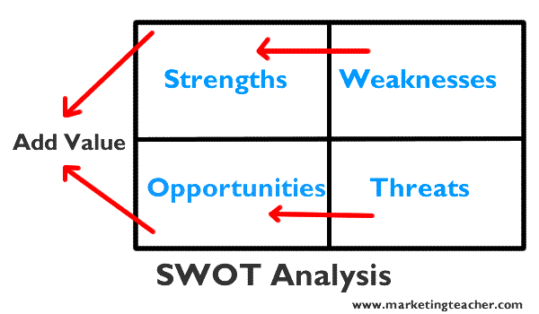

营销要点
1.什么是营销？营销的定义。
营销是个人和组织通过创造和与他人交换价值来获得他们需要和想要的东西的社会过程.(价值互换的一个过程)
当然，营销只是一种过程，价值是结果，这个结果可以是直接的金钱或者是客户关系等等。
营销是一种活动，一系列机构，以及创建，交流，交付和交换对客户，客户，合作伙伴和整个社会都有价值的产品的过程。(一切都是营销)
2.SWOT分析
swot分析要清楚我们营销对象的几个特点：
- 产品优势
- 产品劣势
- 机遇
- 风险

优点以及缺点是内部因素，机遇与风险是外在因素。我们的目标就是把我们的弱点转化为优势，将我们的风险转化为机遇。 最终我们将内部优势与外部机会想匹配的选项为客户增加价值。
分析的目的是必须为我们的产品以及服务增加价值。
3.五力分析
五力分析法是对一个产业盈利能力和吸引力的断面扫描，说明的是该产业中的企业平均具有的盈利空间，所以这是一个产业形势的衡量指标，而非企业能力的衡量指标。
五种力量分析着眼于五个关键领域
1. 即将面临的威胁
是否是规模经济，例如与批量采购相关的好处。
是否入门成本高或者低成本，例如最新数字技术的成本是多少？
是否易于访问分销渠道，例如我们的竞争对手是否有分销渠道？
与公司规模无关的成本优势，例如个人学习或大公司不拥有的知识或学习曲线效应
竞争对手会报复吗？
2. 购买者的议价能力
政府的行动，例如是否会引入新法律，削弱我们的竞争地位？
差异化有多重要？例如，香槟品牌无法复制。这减弱了环境的影响。
这在市场上有少数大型购买商的情况下是很高的。(会形成 二级分销商)
市场上有很多小型的供应商。
供应商之间的转换成本很低，例如从一个卡车供应商转到另一个。
3. 供应商的能力
简单来说，就是关于货源方面的一些影响因素。
供应商的力量倾向于逆转买家的力量。(供应商可以控制输出成本来影响购买者的成本)
转换成本高的地方，例如从一个软件供应商切换到另一个软件供应商
品牌强大的公司参与，例如凯迪拉克，必胜客，微软。
供应商有可能向前推进，例如酿酒商购买酒吧。(供应商成为竞争对手)
客户太散（不是集群），因此他们几乎没有议价能力，例如偏远地区的天然气/加油站。
4. 替代品的威胁
被新产品替代之后，减少了市场需求
被其他公司跨行攻击。
市场需求减少，我们总是可以不用。
5. 竞争激烈的竞争
大部分行业中的企业，相互之间的利益都是紧密联系在一起的，作为企业整体战略一部分的各企业竞争战略，
其目标都在于使得自己的企业获得相对于竞争对手的优势，所以，在实施中就必然会产生冲突与对抗现象，
这些冲突与对抗就构成了现有企业之间的竞争。
现有企业之间的竞争常常表现在价格、广告、产品介绍、售后服务等方面，其竞争强度与许多因素有关。
4. pest分析
宏观环境，例如政治（和法律）力量，经济力量，社会文化力量和技术力量。这些被称为PEST因素。
分析的一些简单规则
- 优势与劣势一定要切合实际应用场景。(偏离应用场景的优势，劣势是无用的)
- 清楚的知道产品现在的定位以及未来最高会处于什么样的位置
- 营销一定要有实际的产品，避免灰色区域。
- swot分析的结果要对比竞争对手，哪些比别人好，或者哪些比别人差。
- 尽量切合实际应用场景，不要想的过于复杂或者过度设想
- 所有的分析都是主观判断，需要善于采纳他人建议。
营销理念
当代营销专注于满足客户需要，需求和要求。 他是通过交换过程为满意的客户提供价值。 营销理念需要由组织内的每个人都统一。 必须确定和预期未来都需求。 通常关注盈利能力，特别在企业部门。 最近的定义认识到营销对社会的影响。 与客户建立了长期合作关系。